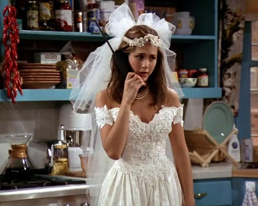
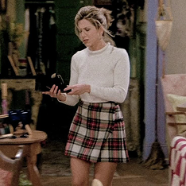
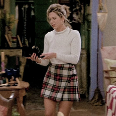
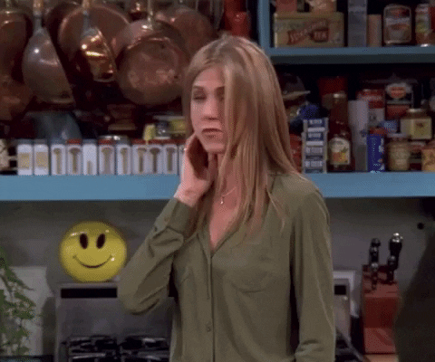
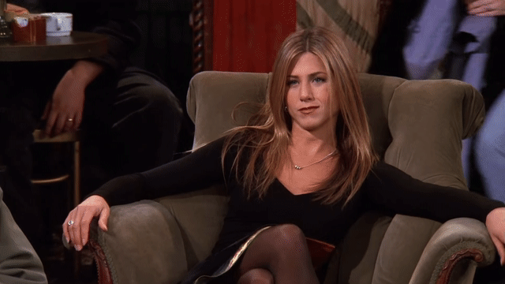
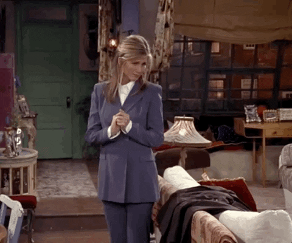
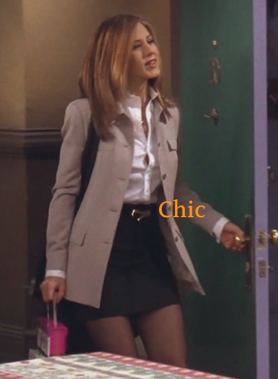
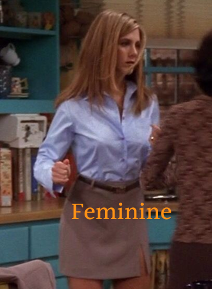
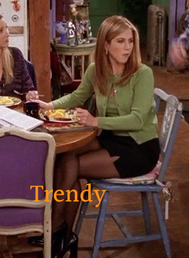
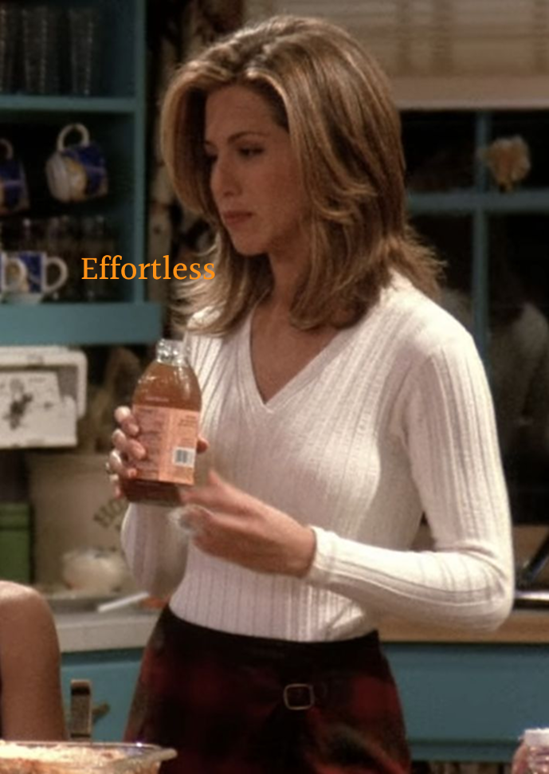

www.rachel.com


She ran from her own wedding, but that moment was when her real life truly began. In a soaked wedding dress, stepping into Central Perk for the first time, Rachel took her first real step away from being just ‘someone’s daughter’ and toward becoming her own person. From a sheltered, spoiled runaway bride to a determined fashion executive carving out her own path, her story is a graceful, sometimes messy, always honest journey of finding herself — not by standing still, but by bravely running forward.
 

Rachel Green is a woman who grows by learning how to stand on her own. She starts as a sheltered girl who lived by other people’s expectations, but once she takes that step into Central Perk in her wedding dress, her life becomes her own story. She fails, tries again, and builds herself piece by piece — through new jobs, new friendships, and all the heartbreak in between. She’s warm, stubborn in the best way, and endlessly driven when she finally discovers what she truly wants. Rachel is proof that becoming yourself is messy, beautiful, and always worth it.

-

Rachel may have started her life as a spoiled rich girl, but that privilege was exactly what made her transformation so powerful. She walked away from comfort, money, and the world that defined her — choosing instead to learn, work, and grow on her own terms. Her ‘spoiled’ past isn’t a flaw; it’s the starting line of a journey where she proves that who you become matters far more than where you began.
-

Rachel’s independence wasn’t just about paying her own rent it was about discovering who she was. From pouring coffee to climbing the fashion ladder, she stumbled, learned, and kept going. Her real beauty came from standing on her own, no longer needing anyone else’s spotlight to shine.
They loved each other, yet always seemed a little out of sync. “We were on a break!” became their anthem because love between them was never simple, but always real. Through breakups, makeups, and missed chances, they kept finding their way back to each other a timeless love story that defined Friends.

Ross and Rachel’s story was never just about love it was about growing up through each other. What began as a spark of first love turned into years of missed chances, heartbreaks, and quiet longing. They hurt each other, learned from it, and somehow always found their way back. Their love was messy, imperfect, but in that imperfection, it became real. And in that final moment when Rachel didn’t get on the plane every fight, every tear, every mistake finally made sense. It wasn’t just a happy ending. It was a story that proved what love truly means.

-

Rachel’s outfits are more than just clothes — they’re a living timeline of who she becomes throughout the series. From the preppy, slightly clueless runaway-bride style to the polished, confident looks of her 90s fashion-executive era, every outfit marks a new stage in her independence. Her wardrobe grows with her: playful when she’s discovering herself, bold when she’s taking risks, and effortlessly cool when she finally knows her worth. ‘Rachel Green fashion’ isn’t just a trend or an aesthetic; it’s a visual story of a woman learning, falling, rebuilding, and shining in her own way.
-

Chic Look
Rachel’s chic look begins with quiet confidence. A fitted blouse, a midi skirt, and just the right amount of polish her elegance lies in the simplicity of clean lines and subtle details. It’s the kind of sophistication that effortlessly commands attention.
-

Feminine Look
Rachel’s feminine look is soft, but never fragile. Silky fabrics, pastel tones, and graceful silhouettes reflect her quiet confidence. It’s the kind of femininity that feels warm, independent, and effortlessly beautiful.
-

Trendy Look
As the ultimate 90s fashion icon, Rachel’s trendy look is always a step ahead. From plaid skirts and crop knits to slip dresses, she redefines every trend with her own charm. She doesn’t follow fashion she is the fashion.
-

Effortless Look
Rachel’s effortless look proves that perfection doesn’t need to try too hard. A loose shirt, a pair of jeans, and undone hair it’s casual, confident, and completely her. Because true style is when you look most like yourself.


In the end, Rachel Green is proof that life gets brighter when you choose your own path. She stumbled, cried, laughed, and kept moving forward with style and heart. This page may close, but her courage — and her incredible outfits — will always remind us that becoming yourself is the greatest glow-up of all.